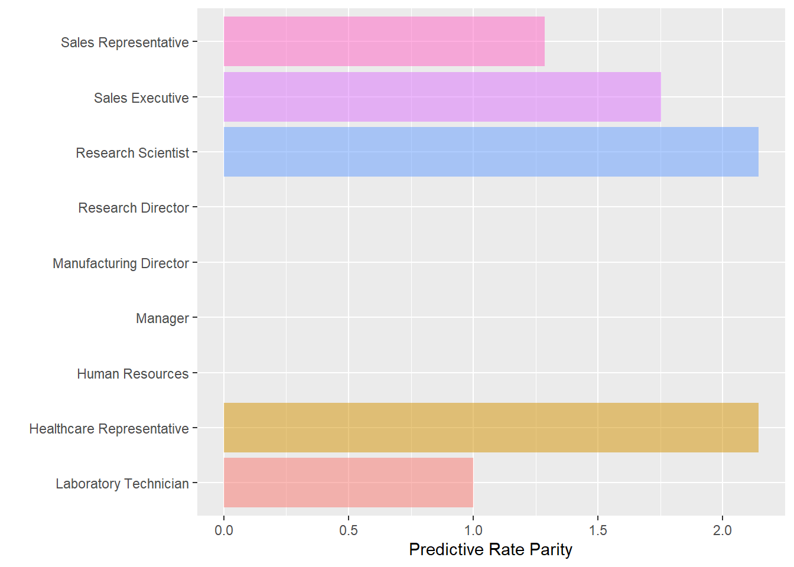

library(tidyverse) # Datahåndtering, grafikk og glimpse()
library(rsample) # for å dele data i training og testing
library(caret) # Funksjonen confusionMatrix()
library(fairness) # Beregne mål på fairness4 En lett introduksjon til fairness
I dette kapittelt skal vi bruke følgende pakker:
Det kan være nyttig å gi allerede nå begynne å gjøre noen rettferdighetsbetraktninger. For å varme opp litt. Foreløpig har vi kun sett på regresjonsmodeller, og da er det begrenset i hvilken grad vi klarer tune modellene for å tilpasse ønsket resultat. Det blir mer av det siden, særlig når vi kommer til random forest. Men vi starter med å introdusere noen begreper og betraktninger.
4.1 Hva slags rettferdighet
I denne settingen kan rettferdighet kommer i betraktning på flere måter, herunder følgende:
- I hvilken grad maskiner vs mennesker tar avgjørelser, og herunder mulighet til å bli hørt og legge frem sin sak
- I hvilken grad dataene algoritmen er trent opp på inneholder skjevheter i utgangspunktet som så reproduseres i videre implementering
- I hvilken grad sluttresultatet har rimelig presisjon og akseptable feilrater, herunder vurdering av asymetriske feilrater
- I hvilken grad forrige punkt er avpasset mot hvilke tiltak man så setter i verk
- I hvilken grad feilrater og presisjon varierer systematisk med undergrupper i populasjonen
Det er nok av ting å tak i her, men vi skal her fokusere på det som kan tallfestes gitt den modellen man har. Men for all del: Hvis datakvaliteten er det begrenset hvor bra det kan bli uansett. Selv om kjente skjevheter i dataene kan i prinsippet motarbeides, så er det vel i praksis slik at en skjevhet kommer sjelden alene?
Vurderinger av overordnet feilrater er et gjennomgående tema, så vi starter med det. Deretter skal vi se på mål på skjevheter over undergrupper. Prinsippet er relativt enkelt, uten at vurderingene blir enkle av den grunn.
4.2 Mer confusion matrix
Code
est_multlogit <- glm(Attrition ~ ., data = training, family = "binomial")
summary(est_multlogit)
Call:
glm(formula = Attrition ~ ., family = "binomial", data = training)
Deviance Residuals:
Min 1Q Median 3Q Max
-1.6886 -0.4840 -0.2374 -0.0862 3.3170
Coefficients:
Estimate Std. Error z value Pr(>|z|)
(Intercept) -1.090e+01 7.450e+02 -0.015 0.988322
Age -3.671e-02 1.637e-02 -2.243 0.024906 *
BusinessTravelTravel_Frequently 1.627e+00 4.663e-01 3.490 0.000483 ***
BusinessTravelTravel_Rarely 8.847e-01 4.265e-01 2.074 0.038070 *
DailyRate -3.249e-04 2.657e-04 -1.223 0.221450
DepartmentResearch & Development 1.303e+01 7.450e+02 0.017 0.986048
DepartmentSales 1.348e+01 7.450e+02 0.018 0.985565
DistanceFromHome 4.325e-02 1.308e-02 3.307 0.000944 ***
Education 2.259e-03 1.047e-01 0.022 0.982789
EducationFieldLife Sciences -8.614e-01 1.036e+00 -0.832 0.405637
EducationFieldMarketing -2.986e-01 1.085e+00 -0.275 0.783245
EducationFieldMedical -9.341e-01 1.037e+00 -0.901 0.367673
EducationFieldOther -8.090e-01 1.106e+00 -0.731 0.464508
EducationFieldTechnical Degree 6.014e-02 1.057e+00 0.057 0.954635
EmployeeNumber -3.297e-04 1.818e-04 -1.814 0.069727 .
EnvironmentSatisfaction -4.976e-01 9.990e-02 -4.981 6.31e-07 ***
GenderMale 2.224e-01 2.157e-01 1.031 0.302405
HourlyRate -3.877e-03 5.392e-03 -0.719 0.472136
JobInvolvement -5.454e-01 1.458e-01 -3.741 0.000183 ***
JobLevel -1.437e-02 3.834e-01 -0.037 0.970101
JobRoleHuman Resources 1.413e+01 7.450e+02 0.019 0.984868
JobRoleLaboratory Technician 1.579e+00 5.597e-01 2.822 0.004773 **
JobRoleManager -1.613e+00 1.280e+00 -1.260 0.207596
JobRoleManufacturing Director -2.403e-01 6.135e-01 -0.392 0.695291
JobRoleResearch Director -2.531e+00 1.243e+00 -2.035 0.041806 *
JobRoleResearch Scientist 3.845e-01 5.748e-01 0.669 0.503513
JobRoleSales Executive 3.167e-01 1.614e+00 0.196 0.844462
JobRoleSales Representative 1.478e+00 1.662e+00 0.890 0.373555
JobSatisfaction -3.238e-01 9.696e-02 -3.340 0.000839 ***
MaritalStatusMarried 3.633e-01 3.130e-01 1.161 0.245800
MaritalStatusSingle 9.102e-01 4.057e-01 2.243 0.024875 *
MonthlyIncome 9.730e-05 9.890e-05 0.984 0.325190
MonthlyRate 1.173e-05 1.499e-05 0.783 0.433906
NumCompaniesWorked 1.705e-01 4.652e-02 3.665 0.000248 ***
OverTimeYes 1.892e+00 2.308e-01 8.195 2.50e-16 ***
PercentSalaryHike -6.513e-02 4.714e-02 -1.382 0.167122
PerformanceRating 6.772e-01 4.816e-01 1.406 0.159676
RelationshipSatisfaction -3.888e-01 9.884e-02 -3.934 8.37e-05 ***
StockOptionLevel -2.737e-01 1.822e-01 -1.502 0.133202
TotalWorkingYears -6.528e-02 3.587e-02 -1.820 0.068731 .
TrainingTimesLastYear -2.136e-01 8.571e-02 -2.492 0.012712 *
WorkLifeBalance -2.117e-01 1.469e-01 -1.441 0.149470
YearsAtCompany 6.602e-02 4.876e-02 1.354 0.175764
YearsInCurrentRole -1.021e-01 5.548e-02 -1.840 0.065748 .
YearsSinceLastPromotion 2.056e-01 5.166e-02 3.979 6.91e-05 ***
YearsWithCurrManager -1.933e-01 6.078e-02 -3.180 0.001473 **
---
Signif. codes: 0 '***' 0.001 '**' 0.01 '*' 0.05 '.' 0.1 ' ' 1
(Dispersion parameter for binomial family taken to be 1)
Null deviance: 944.39 on 1101 degrees of freedom
Residual deviance: 616.66 on 1056 degrees of freedom
AIC: 708.66
Number of Fisher Scoring iterations: 15Code
attrition_test <- testing %>%
mutate(prob = predict(est_multlogit, newdata = testing, type = "response")) %>%
mutate(attrition_class = as.factor(ifelse(prob < .5, "No", "Yes")))Code
cm <- confusionMatrix(attrition_test$Attrition, attrition_test$attrition_class, positive = "Yes")
cmConfusion Matrix and Statistics
Reference
Prediction No Yes
No 288 12
Yes 42 26
Accuracy : 0.8533
95% CI : (0.8129, 0.8878)
No Information Rate : 0.8967
P-Value [Acc > NIR] : 0.9965
Kappa : 0.4128
Mcnemar's Test P-Value : 7.933e-05
Sensitivity : 0.68421
Specificity : 0.87273
Pos Pred Value : 0.38235
Neg Pred Value : 0.96000
Prevalence : 0.10326
Detection Rate : 0.07065
Detection Prevalence : 0.18478
Balanced Accuracy : 0.77847
'Positive' Class : Yes
4.3 Mål på fairness
Ovenfor så vi blant annet at “positive predicted value” , altså andelen sanne positive av alle predikerte positive, er 0.382.
Men det er ulike typer jobber i denne bedriften. Her er fordelingen for test-datasettet:
| Characteristic | No, N = 3001 | Yes, N = 681 |
|---|---|---|
| JobRole | ||
| Healthcare Representative | 31 (10%) | 1 (1.5%) |
| Human Resources | 11 (3.7%) | 3 (4.4%) |
| Laboratory Technician | 47 (16%) | 17 (25%) |
| Manager | 24 (8.0%) | 3 (4.4%) |
| Manufacturing Director | 29 (9.7%) | 3 (4.4%) |
| Research Director | 17 (5.7%) | 1 (1.5%) |
| Research Scientist | 59 (20%) | 18 (26%) |
| Sales Executive | 70 (23%) | 14 (21%) |
| Sales Representative | 12 (4.0%) | 8 (12%) |
| 1 n (%) | ||
For illustrasjonens skyld kan vi da dele inn datamaterialet i to deler: lab-teknikkere og resten. For hver gruppe kan vi så lage en confusion matrix og undersøke verdiene.
Code
labTech <- attrition_test %>%
filter(JobRole %in% c("Laboratory Technician"))
others <- attrition_test %>%
filter( !(JobRole %in% c("Laboratory Technician") ))
cm1 <- confusionMatrix(labTech$Attrition, labTech$attrition_class, positive = "Yes")
cm2 <- confusionMatrix(others$Attrition, others$attrition_class, positive = "Yes")
cm1 Confusion Matrix and Statistics
Reference
Prediction No Yes
No 39 8
Yes 10 7
Accuracy : 0.7188
95% CI : (0.5924, 0.824)
No Information Rate : 0.7656
P-Value [Acc > NIR] : 0.8490
Kappa : 0.251
Mcnemar's Test P-Value : 0.8137
Sensitivity : 0.4667
Specificity : 0.7959
Pos Pred Value : 0.4118
Neg Pred Value : 0.8298
Prevalence : 0.2344
Detection Rate : 0.1094
Detection Prevalence : 0.2656
Balanced Accuracy : 0.6313
'Positive' Class : Yes
Code
cm2Confusion Matrix and Statistics
Reference
Prediction No Yes
No 249 4
Yes 32 19
Accuracy : 0.8816
95% CI : (0.8398, 0.9157)
No Information Rate : 0.9243
P-Value [Acc > NIR] : 0.997
Kappa : 0.4569
Mcnemar's Test P-Value : 6.795e-06
Sensitivity : 0.82609
Specificity : 0.88612
Pos Pred Value : 0.37255
Neg Pred Value : 0.98419
Prevalence : 0.07566
Detection Rate : 0.06250
Detection Prevalence : 0.16776
Balanced Accuracy : 0.85610
'Positive' Class : Yes
Positive predicted value for lab-teknikker er 0.412 og for resten 0.373.
Forholdstallet mellom disse er 0.9047619, alså nesten likt. Slik sett kan vi si at modellen er rettferdig på dette målet ved at disse to gruppene er like.
Men hvis du sjekker output fra confusionMatrix ovenfor, så er jo ikke alle tallene like. Så det kommer an på hvilke mål du sammenligner.
Pakken fairness gjør en tilsvarende beregning for deg og kan gi resultatet grafisk. Her er sammenligning av positive predicted value gjort for alle grupper av jobber:
Code
pred_rate_parity(data = attrition_test,
outcome = "Attrition",
group = "JobRole",
preds = "attrition_class",
base = "Laboratory Technician"
)[[2]]
Nå er det vesentig større forskjeller. Utvilsomt er grunnen at gruppen av ‘andre’ var sammensatt av veldig ulike grupper som var veldig forskjellig innbyrdes, men som jevnet hverandre ut i snitt. Noen av disse gruppene var dessuten små.
4.4 Oppgaver
Exercise 4.1 Gå gjennom eksempelet over og repliker disse analysene slik at du ser at du skjønner hvordan det fungerer.
Exercise 4.2 Regn ut minst tre ulike mål på fairness og velg selv over hvilke grupper. Gi en forklaring på hva hver av dem betyr.
Exercise 4.3 Det er mange muligheter her: ulike mål og flere grupper. Man kan også kombinere grupper på flere måter. Gjør følgende vurderinger:
- Er det rimelig å gjøre en prediksjon som gir like resultater på tvers av alle mål og grupper? Kan du i det hele tatt få en “fair” modell?
- Hvilke mål på “fairness” vil du si er viktigst i dette eksempelet? Hvorfor?
Exercise 4.4 Kanskje hjelper det å estimere en annen modell? Estimer en ny logistisk regresjon, men velg bare et fåtall variable som du velger selv. Hold det enkelt i første omgang. Se på resultatene og vurder:
- Ble accuracy bedre eller verre?
- Ble resultatet mer “fair”?
Exercise 4.5 Velg et nytt datasett, gjør en prediksjon med logistisk regresjon og regn ut mål på “fairness” igjen. Gjør tilsvarende som over.
4.5 Refleksjonsoppgaver
Exercise 4.6 Studien til Caspi et al. (2017) bruker regresjon for å predikere hvem som tilhører den gruppen med konsentrasjon av sosiale problemer. (Det er en litt annen type modell enn logisk regresjon, men det spiller egentlig liten rolle). Diskuter følgende:
- Hva slags informasjon synes du mangler for å vurdere treffsikkerheten på prediksjonsmodellen?
- Hva slags tiltak er det tenkt å settes i verk når man har identifisert hvem som får problemer i voksen alder?
- Basert på hvordan prediksjonen skal brukes hva tenker du er akseptable feilrater?
- Er det behov for å vurdere “fairness” grundigere her?
Exercise 4.7 Studien til Berk, Sorenson, and Barnes (2016) bruker andre typer modeller enn vi har sett på til nå. Se bort fra akkurat det tekniske i modeller og justeringer, men se diskusjonen av resultatet presentert som confusion matrix. Se for deg at dette blir de faktiske resultatene for fengsling eller ikke-fengsling og vurder følgende:
- Synes du at forholdstallet 1 til 10 for falske positive/negative er ok i denne settingen? Hvis du skal foreslå noe annet, hva vil du si da?
- Er det grunn til å tro at man bør undersøke “fairness” grundigere her? I så fall: hvilke undergrupper mener du er mest viktig å undersøke dette for?